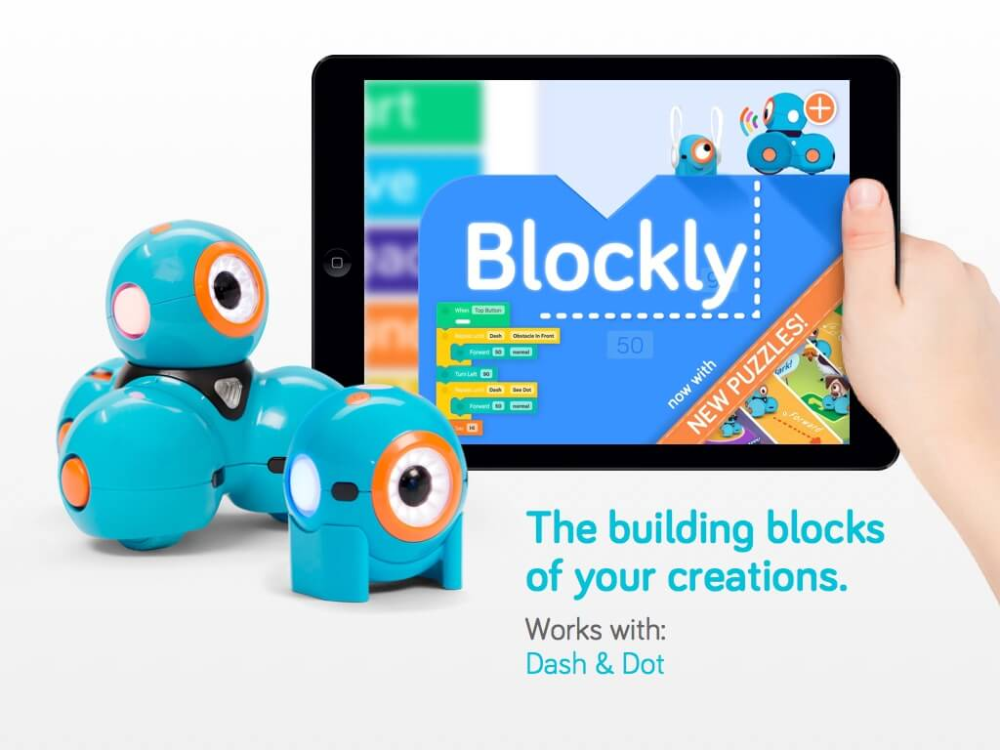

S4A (Scratch for Arduino) es una versión modificada del lenguaje de bloques Scratch,
que permite la interacción con el hardware libre Arduino.
S4A fue creado por el equipo de Smalltalk del Citilab en el año 2010,
e implementa bloques específicos para manejar los sensores y actuadores de Arduino
Esta aplicación nos permitirá programar robots, ingenios tecnológicos y juegos que
interaccionan con el mundo físico de una forma muy sencilla. Con S4A
, podrás programar utilizando Scratch, elementos de hardware como motores,
sensores, leds, zumbadores..... Y podrás realizar videojuegos que interaccionan con
el mundo real. En la página oficial del proyecto Scratch for Arduino puedes encontrar
información muy completa sobre la aplicación, manuales de uso, ejemplos....

CodeMonkey es una propuesta que busca facilitar el aprendizaje de la programacion por medio de
un divertido juego donde el personaje principal es un pequeño mono que esta en busca de su
alimento, cuenta con diferentes niveles donde se practica desde conceptos básicos de
programacion hasta conceptos mas avanzados .
CodeMonkey maneja tres diferentes programas, el uso para usuario normal donde puedes jugar
sin registrarte pero si desean guardar tus avances es recomendable crear una cuenta.
App Inventor es otro proyecto del MIT relacionado con aprender a
programar o a crear aplicaciones para todas las edades, y permite crear
aplicaciones para Android en menos de 30 minutos sin necesidad de programar.
Para ponerte a trabajar con App Inventor tan sólo necesitas iniciar sesión con tu cuenta de Google.
En la práctica, esta herramienta online es un generador de aplicaciones móviles
para Android. A partir de un visor con forma de smartphone, podrás añadir botones,
imágenes, listas, menús desplegables y otros elementos propios de una app móvil cualquiera.
También integra su propio emulador para comprobar que tu app va bien y, finalmente, permite
crear un instalador APK para tu app Android.

Google Blockly es un lenguaje de programación visual compuesto por un conjunto de
instrucciones que podemos combinar como si fueran las piezas de un puzle. Así de
esta forma podemos crear programas sencillos o complejos. La principal ventaja que
ofrecen los lenguajes de programación por bloques, es que permite a los programadores
rincipiantes concentrarse en la lógica de la programación abstrayéndose de la
gramática del propio lenguaje.
Blockly permite arrastrar los distintos componentes de control, lógica, operaciones
matemáticas, texto, listados y procesos para crear sencillos scripts que podremos exportar
a lenguajes como JavaScript, Dart, Python o XML.